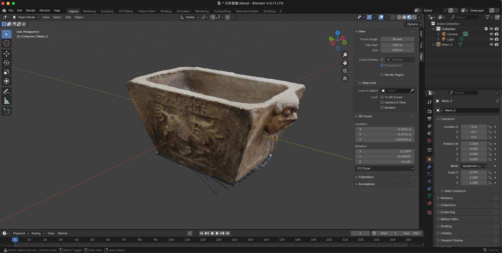
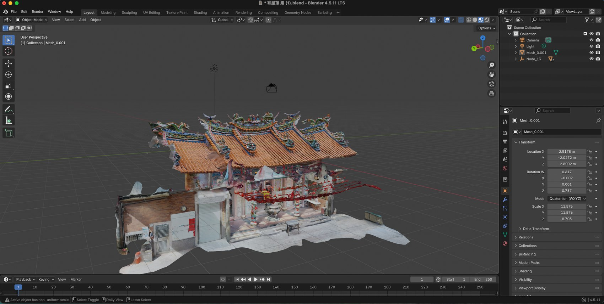
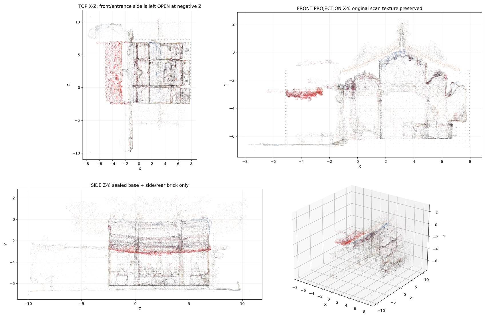
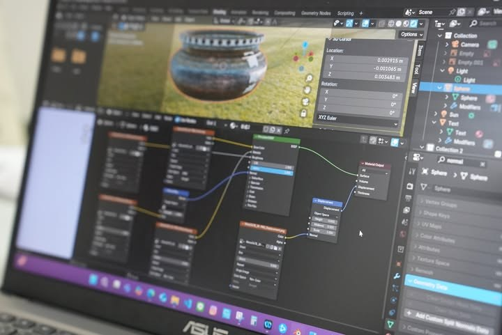
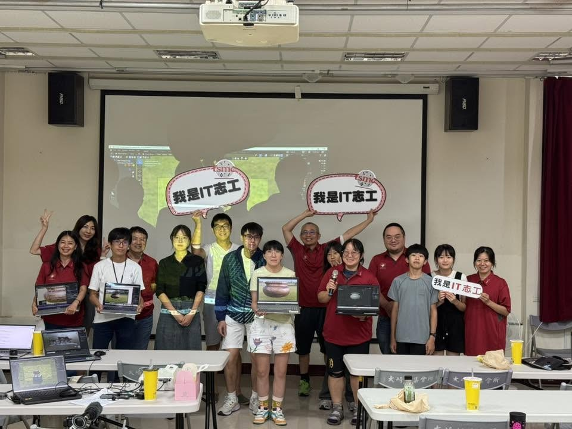
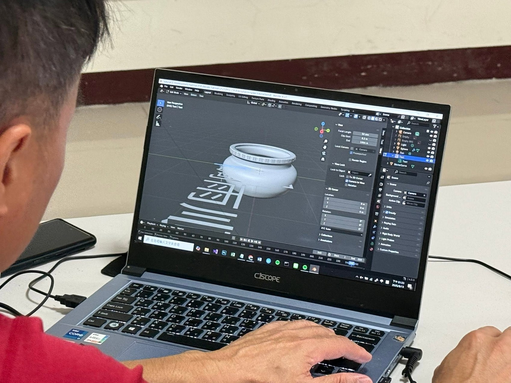

百年石香爐
model-box.glb
以保生宮百年石香爐為對象，保存器物形制、紋理與地方信仰記憶。
IT ESG DIGITAL HERITAGE PROJECT
IT ESG 廠處志工進行數位文化保存專案，數十位 IT 廠處志工參與， 於 2024 年完成大崎聚落與保生宮相關影像拍攝；2025 年進一步展開 3D 建模與列印課程， 共舉辦 7 次 3D 建模工作坊。志工透過攝影紀錄、空間掃描、建模修補與列印實作， 將地方信仰空間、聚落影像與文化記憶轉化為可被保存、展示與再學習的數位文化資產。




2025 年，專案以工作坊形式帶領志工從基礎建模、模型修補、材質檢視到 3D 列印應用， 逐步完成文化保存模型。這些成果不只是 3D 檔案，也代表企業志工以資訊技術參與地方文化保存的實踐。


model-box.glb
以保生宮百年石香爐為對象，保存器物形制、紋理與地方信仰記憶。
model-upper.glb
以屋頂空拍與影像資料重建廟宇屋頂，作為舊廟建築數位保存的一部分。
model-building.glb
整合建築掃描、屋頂模型與人工修補，呈現保生宮舊廟的 3D 重建成果。